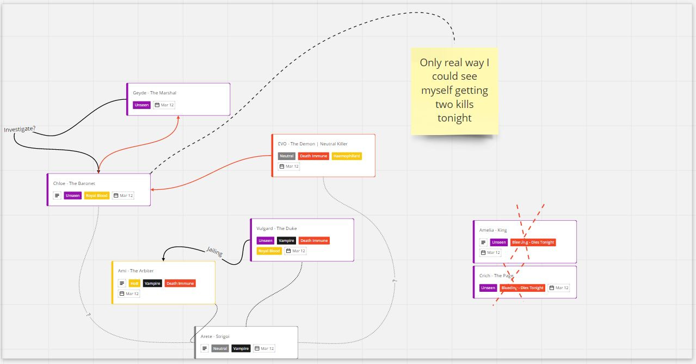

Interaction between me and Vulgard during grand trial of Wazza implies Vulgard betrayed me.
For a vampire that is siding Unseen and not bother counterclaim the senex claim

Interaction between me and Vulgard during grand trial of Wazza implies Vulgard betrayed me.
For a vampire that is siding Unseen and not bother counterclaim the senex claim
Already said it in scumchat but if you outted as convert I woulda gone for nk win by getting us to 4 people. You did real well
Deadchat oops
At the point when Ami claimed Senex I was no longer siding Unseen
Exactly true. I never allow you to get lynched if I’m not converted.
also i’d like to apologize again to @sulit cause like
she gave me the wrong handmaiden classcard and i totally didnt notice when i answered her questions
this hecking nerd got the FoL handmaiden aaaaa
My reads are actually horrendous though.

that was
my fault
don’t feel bad
i mean it was your fault
but i totally shoulda known 
I’d like to think we are just that good at faking it 
Fortunately for you, I gladly accept that I have been powerwolfed so hard.
You made Alice such a beginner.
I mean, the wolves were good this game.
Napoleon [Dead]03/02/2020
lets convert arete
I FEEL LIKE PABLO03/02/2020
no
kill areteNapoleon [Dead]03/02/2020
even though there is a public scout on him
I want to play groupscum so badly
I just leveraged my towncred. You guys would never lynch me there if I continued trying to play like a villager.
if you want to talk balance, ping vulgard; he authored much more of this setup than me
cc @Chloe
I mean, if I had my head together I would voted Napoleon.
Arbiter should not be able to take the abilities of neutrals